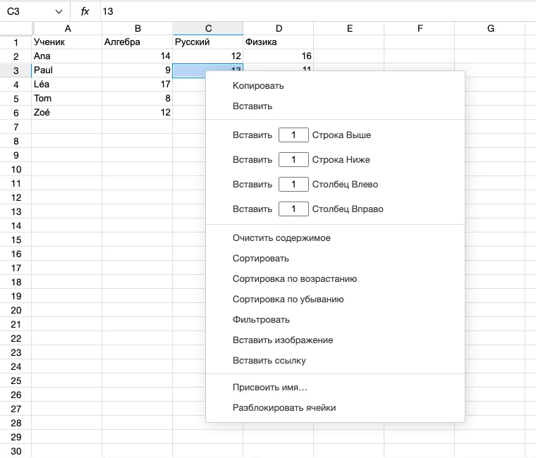

Строки и столбцы
Размер
| Действие | Результат |
|---|---|
| потянуть правую границу заголовка столбца | меняет ширину |
| потянуть нижнюю границу заголовка строки | меняет высоту |
| правая кнопка на заголовке › Ширина, Высота | размер в пикселях для всех выделенных столбцов или строк |
Вставка, удаление
Правая кнопка в ячейке или на заголовке: Вставить 1 Строка Выше, Вставить 1 Строка Ниже, Вставить 1 Столбец Влево, Вставить 1 Столбец Вправо. Количество набирают в поле. Правая кнопка на заголовке: Удалить выбранное Строка, Удалить выбранное Столбец.

Формулы исправляются: их ссылки следуют за перемещёнными ячейками. Предел — 10 000 строк и 1 000 столбцов.
Скрытие
Правая кнопка на заголовке › Скрыть выбранное Строка, Скрыть выбранное Столбец. Скрытые ячейки по-прежнему вычисляются. Чтобы показать их, выделите заголовки вокруг, затем правая кнопка › Показать скрытое.
Закрепление
Закреплённые строки и столбцы остаются видны при прокрутке. Выделите граничную ячейку, затем или Вид › Заморозить:
| Команда | Остаются видны |
|---|---|
| Заморозить до текущей строки | строки до строки ячейки включительно |
| Заморозить до текущего столбца | столбцы до столбца ячейки включительно |
| Заморозить до текущей ячейки | и те, и другие |
| Отменить заморозку | ничего особого |
Чтобы сохранить строку заголовка: щёлкните ячейку строки 1, Заморозить до текущей строки.